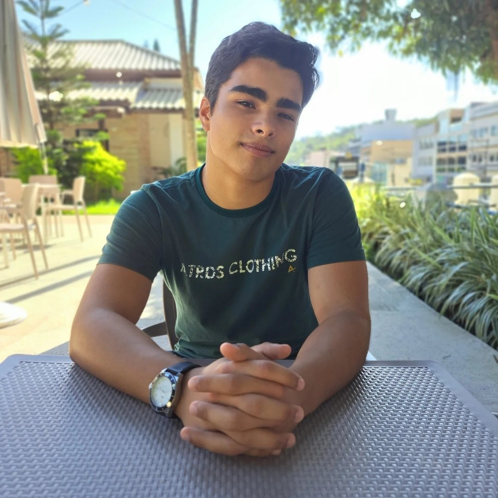

Gastronomia com alma
Receitas feitas com
amor e tradição
Um espaço criado por apaixonados pela cozinha para compartilhar receitas autênticas, dicas práticas e o prazer de cozinhar bem.
Explorar receitasQuem somos nós?
Somos estudantes apaixonados por gastronomia que acreditam que cozinhar é muito mais do que seguir uma lista de ingredientes — é contar histórias, preservar culturas e criar memórias afetivas.
Neste espaço reunimos receitas testadas, técnicas acessíveis e curiosidades sobre o universo culinário para inspirar tanto iniciantes quanto cozinheiros experientes.
Venha nos conhecer melhor
Leonardo S. Souza
Matrícula: 202611634
Eu me chamo Leonardo, sou apaixonado por tecnologia e inovação. Sou técnico em informática e graduando em engenharia de software, porém, além de toda grande responsabilidade, a cozinha é a responsabilidade mais importante que eu posso ter.
O meu amor pela comida é o responsável por me dar sustância e energia para desenvolver todos os meus sonhos.
Gabriel Serafim
Matrícula: 202612167
Estudante de Engenharia de Software na Univassouras, focado em criar uma base fullstack sólida. Gosto de entender como tudo funciona, além dos códigos. Uso JavaScript para criar soluções reais e funcionais.
O meu gosto pela comida vem pela curiosidade e pela busca por novas experiências gastronômicas de outros locais do globo.
Gustavo Andrade
Matrícula: 202611622
Sou um estudante apaixonado por tecnologia que acredita que programar é muito mais do que escrever linhas de código — é resolver problemas, criar soluções inovadoras e construir o futuro digital.
Neste espaço reúno sistemas validados, padrões de projeto eficientes e tendências sobre o ecossistema de software para inspirar tanto estudantes quanto engenheiros veteranos no mercado.
Venancio Trancoso
Matrícula: 202611562
Sou um estudante apaixonado por tecnologia que acredita que programar é muito mais do que escrever linhas de código — é resolver problemas, criar soluções e transformar ideias em realidade.
Neste espaço compartilho conteúdos, práticas acessíveis e curiosidades sobre o universo da engenharia de software para inspirar tanto iniciantes quanto desenvolvedores experientes.

O que você quer preparar hoje?
Pães
Do pão caseiro rústico ao brioche aerado — aprenda a fermentar, sovar e assar pães incríveis em casa.
Ver receitas →Bolos
Bolos simples de batedeira, naked cakes sofisticados e tudo que faz uma sobremesa virar memória afetiva.
Ver receitas →Massas
Macarrão artesanal, molhos clássicos e combinações que transformam a hora do jantar em algo especial.
Ver receitas →